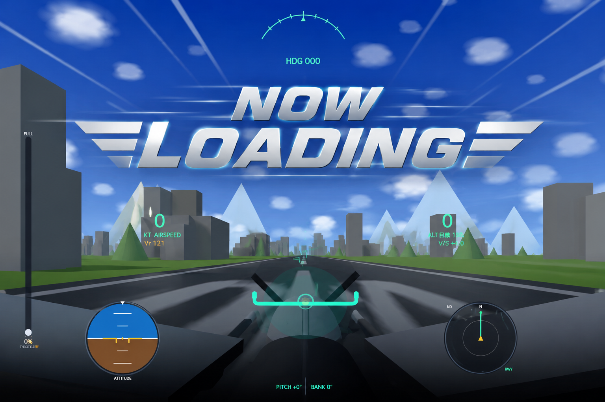

両手でスロットルと操縦桿を握って、飛行機を離陸させろ。
画面に映るあなたの手(✊/🖐)でコックピットを操作。フルスロットルで加速 → Vr 超で操縦桿を引いて ROTATE → 高度150mで離陸 → 自由飛行。旋回して滑走路へ帰投、PAPI／NDを見ながら降下して 🛬 着陸を狙え！失速・ハードランディング注意。
カメラが無い時はキーボードでも操作可：W/S＝スロットル, ↑/↓＝ピッチ, ←/→＝バンク
